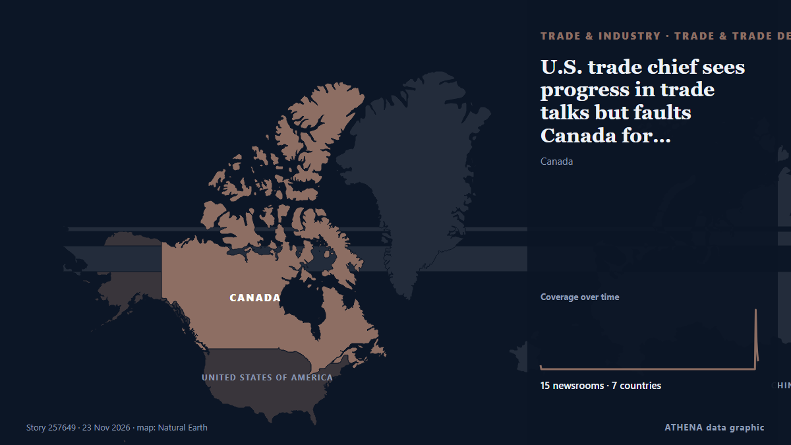

U.S. trade chief sees progress in trade talks but faults Canada for Beijing-friendly moves

U.S. Trade Representative Jamieson Greer says Washington and Ottawa are making progress toward a trade agreement but that Canada's growing trade relationship with China remains a concern. from CBC News (alternative feed)
What changed 3 new reports from 3 outlets in the last 24 hours.
See the sources ›Evidence: Fair
Reported independently by 17 outlets in 7 countries since 5 May, first by CBC News (alternative feed); coverage is fading. ATHENA rates the risk moderate (2.5/10), driven mainly by the severity of the harm described and its geographic and sector reach. Confidence is 88% (high), with 17 independent outlets corroborating it and an average source reliability of 74%. Outlets by country: Canada (15), United States (6), India (4). Coverage: 5 May to 23 Nov, 13615 hours.
Why it matters: Disruption to trade, industry or infrastructure travels along supply chains, changing costs and delivery times far away.
What changed: 3 new reports from 3 outlets in the 24 hours to 23 Nov.
First reported as: Ecuadorian politicians warn about legal provisions in free trade deal
AutomatedSelected, grouped and scored by ATHENA's published method from 19 independent outlets. The headline is the outlet's own; ATHENA's sentences follow fixed patterns - no generative AI writes them. How it works →
How to read this page
- What you are reading
- 17 outlets in 7 countries reported this event. The reports below are listed in the order they appeared; each headline opens the original article. ATHENA writes none of the reports.
- Our reading
- Under watch — The reports describe action, or a decision still to be taken, between states or armed groups. ATHENA follows what happens next. We look for four kinds of development: nothing further, an open action that someone claims, an action through others or without a claim, and an accident or misreading. We do not predict which will happen.
- How much evidence
- Fair Several independent outlets agree, but the picture could still change.
After repeats, off-topic items and stale reports are removed, 14 of the 31 listed reports are counted; 94% of the headlines match the event.
- What this does not mean
- ATHENA measures how an event is reported, not whether it is true. This is not a forecast, a judgement on who is right, or advice.
- What would change it
- Reports from other independent outlets showing a different development, or a firm confirmation or denial from an official source.
Reading R2 · refreshed with every update of this page. ATHENA has not yet published a track record for these readings; when it does, it will be linked here.
At a glance
Selected, scored and written by ATHENA's published methodology. No editor intervenes in individual events. How this is produced ›
| 05 May 15:35 UTC | 1 |
|---|---|
| 07 May 15:35 UTC | 0 |
| 09 May 15:35 UTC | 0 |
| 11 May 15:35 UTC | 0 |
| 13 May 15:35 UTC | 0 |
| 15 May 15:35 UTC | 0 |
| 17 May 15:35 UTC | 0 |
| 19 May 15:35 UTC | 0 |
| 21 May 15:35 UTC | 0 |
| 23 May 15:35 UTC | 0 |
| 25 May 15:35 UTC | 0 |
| 27 May 15:35 UTC | 0 |
| 29 May 15:35 UTC | 0 |
| 31 May 15:35 UTC | 0 |
| 02 Jun 15:35 UTC | 0 |
| 04 Jun 15:35 UTC | 0 |
| 06 Jun 15:35 UTC | 0 |
| 08 Jun 15:35 UTC | 0 |
| 10 Jun 15:35 UTC | 0 |
| 12 Jun 15:35 UTC | 0 |
| 14 Jun 15:35 UTC | 0 |
| 16 Jun 15:35 UTC | 0 |
| 18 Jun 15:35 UTC | 0 |
| 20 Jun 15:35 UTC | 0 |
| 22 Jun 15:35 UTC | 0 |
| 24 Jun 15:35 UTC | 0 |
| 26 Jun 15:35 UTC | 0 |
| 28 Jun 15:35 UTC | 0 |
| 30 Jun 15:35 UTC | 0 |
| 02 Jul 15:35 UTC | 0 |
| 04 Jul 15:35 UTC | 0 |
| 06 Jul 15:35 UTC | 0 |
| 08 Jul 15:35 UTC | 0 |
| 10 Jul 15:35 UTC | 0 |
| 12 Jul 15:35 UTC | 0 |
| 14 Jul 15:35 UTC | 0 |
| 16 Jul 15:35 UTC | 0 |
| 18 Jul 15:35 UTC | 0 |
| 20 Jul 15:35 UTC | 0 |
| 22 Jul 15:35 UTC | 0 |
| 24 Jul 15:35 UTC | 0 |
| 26 Jul 15:35 UTC | 0 |
| 28 Jul 15:35 UTC | 0 |
| 30 Jul 15:35 UTC | 0 |
| 01 Aug 15:35 UTC | 0 |
| 03 Aug 15:35 UTC | 0 |
| 05 Aug 15:35 UTC | 0 |
| 07 Aug 15:35 UTC | 0 |
| 09 Aug 15:35 UTC | 0 |
| 11 Aug 15:35 UTC | 0 |
| 13 Aug 15:35 UTC | 0 |
| 15 Aug 15:35 UTC | 0 |
| 17 Aug 15:35 UTC | 0 |
| 19 Aug 15:35 UTC | 0 |
| 21 Aug 15:35 UTC | 0 |
| 23 Aug 15:35 UTC | 0 |
| 25 Aug 15:35 UTC | 0 |
| 27 Aug 15:35 UTC | 0 |
| 29 Aug 15:35 UTC | 0 |
| 31 Aug 15:35 UTC | 0 |
| 02 Sep 15:35 UTC | 0 |
| 04 Sep 15:35 UTC | 0 |
| 06 Sep 15:35 UTC | 0 |
| 08 Sep 15:35 UTC | 0 |
| 10 Sep 15:35 UTC | 0 |
| 12 Sep 15:35 UTC | 0 |
| 14 Sep 15:35 UTC | 0 |
| 16 Sep 15:35 UTC | 0 |
| 18 Sep 15:35 UTC | 0 |
| 20 Sep 15:35 UTC | 0 |
| 22 Sep 15:35 UTC | 0 |
| 24 Sep 15:35 UTC | 0 |
| 26 Sep 15:35 UTC | 0 |
| 28 Sep 15:35 UTC | 0 |
| 30 Sep 15:35 UTC | 0 |
| 02 Oct 15:35 UTC | 0 |
| 04 Oct 15:35 UTC | 0 |
| 06 Oct 15:35 UTC | 0 |
| 08 Oct 15:35 UTC | 0 |
| 10 Oct 15:35 UTC | 0 |
| 12 Oct 15:35 UTC | 0 |
| 14 Oct 15:35 UTC | 0 |
| 16 Oct 15:35 UTC | 0 |
| 18 Oct 15:35 UTC | 0 |
| 20 Oct 15:35 UTC | 0 |
| 22 Oct 15:35 UTC | 0 |
| 24 Oct 15:35 UTC | 0 |
| 26 Oct 15:35 UTC | 0 |
| 28 Oct 15:35 UTC | 0 |
| 30 Oct 15:35 UTC | 0 |
| 01 Nov 15:35 UTC | 0 |
| 03 Nov 15:35 UTC | 0 |
| 05 Nov 15:35 UTC | 0 |
| 07 Nov 15:35 UTC | 0 |
| 09 Nov 15:35 UTC | 0 |
| 11 Nov 15:35 UTC | 0 |
| 13 Nov 15:35 UTC | 0 |
| 15 Nov 15:35 UTC | 0 |
| 17 Nov 15:35 UTC | 0 |
| 19 Nov 15:35 UTC | 0 |
| 21 Nov 15:35 UTC | 0 |
| 23 Nov 15:35 UTC | 0 |
| 25 Nov 15:35 UTC | 0 |
| 27 Nov 15:35 UTC | 0 |
| 29 Nov 15:35 UTC | 0 |
| 01 Dec 15:35 UTC | 0 |
| 03 Dec 15:35 UTC | 0 |
| 05 Dec 15:35 UTC | 0 |
| 07 Dec 15:35 UTC | 0 |
| 09 Dec 15:35 UTC | 0 |
| 11 Dec 15:35 UTC | 0 |
| 13 Dec 15:35 UTC | 0 |
| 15 Dec 15:35 UTC | 0 |
| 17 Dec 15:35 UTC | 0 |
| 19 Dec 15:35 UTC | 0 |
| 21 Dec 15:35 UTC | 0 |
| 23 Dec 15:35 UTC | 0 |
| 25 Dec 15:35 UTC | 0 |
| 27 Dec 15:35 UTC | 0 |
| 29 Dec 15:35 UTC | 0 |
| 31 Dec 15:35 UTC | 0 |
| 02 Jan 15:35 UTC | 0 |
| 04 Jan 15:35 UTC | 0 |
| 06 Jan 15:35 UTC | 0 |
| 08 Jan 15:35 UTC | 0 |
| 10 Jan 15:35 UTC | 0 |
| 12 Jan 15:35 UTC | 0 |
| 14 Jan 15:35 UTC | 0 |
| 16 Jan 15:35 UTC | 0 |
| 18 Jan 15:35 UTC | 0 |
| 20 Jan 15:35 UTC | 0 |
| 22 Jan 15:35 UTC | 0 |
| 24 Jan 15:35 UTC | 0 |
| 26 Jan 15:35 UTC | 0 |
| 28 Jan 15:35 UTC | 0 |
| 30 Jan 15:35 UTC | 0 |
| 01 Feb 15:35 UTC | 0 |
| 03 Feb 15:35 UTC | 0 |
| 05 Feb 15:35 UTC | 0 |
| 07 Feb 15:35 UTC | 0 |
| 09 Feb 15:35 UTC | 0 |
| 11 Feb 15:35 UTC | 0 |
| 13 Feb 15:35 UTC | 0 |
| 15 Feb 15:35 UTC | 0 |
| 17 Feb 15:35 UTC | 0 |
| 19 Feb 15:35 UTC | 0 |
| 21 Feb 15:35 UTC | 0 |
| 23 Feb 15:35 UTC | 0 |
| 25 Feb 15:35 UTC | 0 |
| 27 Feb 15:35 UTC | 0 |
| 01 Mar 15:35 UTC | 0 |
| 03 Mar 15:35 UTC | 0 |
| 05 Mar 15:35 UTC | 0 |
| 07 Mar 15:35 UTC | 0 |
| 09 Mar 15:35 UTC | 0 |
| 11 Mar 15:35 UTC | 0 |
| 13 Mar 15:35 UTC | 0 |
| 15 Mar 15:35 UTC | 0 |
| 17 Mar 15:35 UTC | 0 |
| 19 Mar 15:35 UTC | 0 |
| 21 Mar 15:35 UTC | 0 |
| 23 Mar 15:35 UTC | 0 |
| 25 Mar 15:35 UTC | 0 |
| 27 Mar 15:35 UTC | 0 |
| 29 Mar 15:35 UTC | 0 |
| 31 Mar 15:35 UTC | 0 |
| 02 Apr 15:35 UTC | 0 |
| 04 Apr 15:35 UTC | 0 |
| 06 Apr 15:35 UTC | 0 |
| 08 Apr 15:35 UTC | 0 |
| 10 Apr 15:35 UTC | 0 |
| 12 Apr 15:35 UTC | 0 |
| 14 Apr 15:35 UTC | 0 |
| 16 Apr 15:35 UTC | 0 |
| 18 Apr 15:35 UTC | 0 |
| 20 Apr 15:35 UTC | 0 |
| 22 Apr 15:35 UTC | 0 |
| 24 Apr 15:35 UTC | 0 |
| 26 Apr 15:35 UTC | 0 |
| 28 Apr 15:35 UTC | 0 |
| 30 Apr 15:35 UTC | 0 |
| 02 May 15:35 UTC | 0 |
| 04 May 15:35 UTC | 0 |
| 06 May 15:35 UTC | 0 |
| 08 May 15:35 UTC | 0 |
| 10 May 15:35 UTC | 0 |
| 12 May 15:35 UTC | 0 |
| 14 May 15:35 UTC | 0 |
| 16 May 15:35 UTC | 0 |
| 18 May 15:35 UTC | 0 |
| 20 May 15:35 UTC | 0 |
| 22 May 15:35 UTC | 0 |
| 24 May 15:35 UTC | 0 |
| 26 May 15:35 UTC | 0 |
| 28 May 15:35 UTC | 0 |
| 30 May 15:35 UTC | 0 |
| 01 Jun 15:35 UTC | 0 |
| 03 Jun 15:35 UTC | 0 |
| 05 Jun 15:35 UTC | 0 |
| 07 Jun 15:35 UTC | 0 |
| 09 Jun 15:35 UTC | 0 |
| 11 Jun 15:35 UTC | 0 |
| 13 Jun 15:35 UTC | 0 |
| 15 Jun 15:35 UTC | 0 |
| 17 Jun 15:35 UTC | 0 |
| 19 Jun 15:35 UTC | 0 |
| 21 Jun 15:35 UTC | 0 |
| 23 Jun 15:35 UTC | 0 |
| 25 Jun 15:35 UTC | 0 |
| 27 Jun 15:35 UTC | 0 |
| 29 Jun 15:35 UTC | 0 |
| 01 Jul 15:35 UTC | 0 |
| 03 Jul 15:35 UTC | 0 |
| 05 Jul 15:35 UTC | 0 |
| 07 Jul 15:35 UTC | 0 |
| 09 Jul 15:35 UTC | 0 |
| 11 Jul 15:35 UTC | 0 |
| 13 Jul 15:35 UTC | 0 |
| 15 Jul 15:35 UTC | 0 |
| 17 Jul 15:35 UTC | 0 |
| 19 Jul 15:35 UTC | 0 |
| 21 Jul 15:35 UTC | 0 |
| 23 Jul 15:35 UTC | 0 |
| 25 Jul 15:35 UTC | 0 |
| 27 Jul 15:35 UTC | 0 |
| 29 Jul 15:35 UTC | 0 |
| 31 Jul 15:35 UTC | 0 |
| 02 Aug 15:35 UTC | 0 |
| 04 Aug 15:35 UTC | 0 |
| 06 Aug 15:35 UTC | 0 |
| 08 Aug 15:35 UTC | 0 |
| 10 Aug 15:35 UTC | 0 |
| 12 Aug 15:35 UTC | 0 |
| 14 Aug 15:35 UTC | 0 |
| 16 Aug 15:35 UTC | 0 |
| 18 Aug 15:35 UTC | 0 |
| 20 Aug 15:35 UTC | 0 |
| 22 Aug 15:35 UTC | 0 |
| 24 Aug 15:35 UTC | 0 |
| 26 Aug 15:35 UTC | 0 |
| 28 Aug 15:35 UTC | 0 |
| 30 Aug 15:35 UTC | 0 |
| 01 Sep 15:35 UTC | 0 |
| 03 Sep 15:35 UTC | 0 |
| 05 Sep 15:35 UTC | 0 |
| 07 Sep 15:35 UTC | 0 |
| 09 Sep 15:35 UTC | 0 |
| 11 Sep 15:35 UTC | 0 |
| 13 Sep 15:35 UTC | 0 |
| 15 Sep 15:35 UTC | 0 |
| 17 Sep 15:35 UTC | 0 |
| 19 Sep 15:35 UTC | 0 |
| 21 Sep 15:35 UTC | 0 |
| 23 Sep 15:35 UTC | 0 |
| 25 Sep 15:35 UTC | 0 |
| 27 Sep 15:35 UTC | 0 |
| 29 Sep 15:35 UTC | 0 |
| 01 Oct 15:35 UTC | 0 |
| 03 Oct 15:35 UTC | 0 |
| 05 Oct 15:35 UTC | 0 |
| 07 Oct 15:35 UTC | 0 |
| 09 Oct 15:35 UTC | 0 |
| 11 Oct 15:35 UTC | 0 |
| 13 Oct 15:35 UTC | 0 |
| 15 Oct 15:35 UTC | 0 |
| 17 Oct 15:35 UTC | 0 |
| 19 Oct 15:35 UTC | 0 |
| 21 Oct 15:35 UTC | 0 |
| 23 Oct 15:35 UTC | 0 |
| 25 Oct 15:35 UTC | 0 |
| 27 Oct 15:35 UTC | 0 |
| 29 Oct 15:35 UTC | 0 |
| 31 Oct 15:35 UTC | 0 |
| 02 Nov 15:35 UTC | 0 |
| 04 Nov 15:35 UTC | 0 |
| 06 Nov 15:35 UTC | 0 |
| 08 Nov 15:35 UTC | 0 |
| 10 Nov 15:35 UTC | 0 |
| 12 Nov 15:35 UTC | 0 |
| 14 Nov 15:35 UTC | 0 |
| 16 Nov 15:35 UTC | 15 |
| 18 Nov 15:35 UTC | 7 |
| 20 Nov 15:35 UTC | 4 |
| 22 Nov 15:35 UTC | 4 |
| 18 Nov 16:10 UTC | 3.0 |
|---|---|
| 18 Nov 18:45 UTC | 1.9 |
| 18 Nov 19:01 UTC | 3.0 |
| 23 Nov 22:35 UTC | 2.5 |
Why these numbers
Importance
How widely and how prominently the story is reported.
Risk
What the reports describe, scored for possible harm. It is not a forecast.
Confidence
How well independent outlets support the story.
The reporting — who reported it, and when
headline as published · opens the original- CBC News (alternative feed) · Canada'If the U.S. doesn't want to do a deal, we're busy,' Carney says of ongoing trade talks
- NDTV · IndiaEU Envoy Highlights Northeast's Role In Trade Pact During Assam Visit
- The Canadian Press (via CityNews) · CanadaEcuadorian politicians warn about legal provisions in free trade deal
- Atlantic Council · United StatesCongress could soon rein in Trump’s tariffs on Canada. Here’s what that could look like.
- The New York Times (World) · United StatesCarney and Xi Announce Canada-China Trade Pact
- Express Tribune · PakistanRs1.34-per-unit tariff hike likely
- Above the Law · United StatesJudge Orders Trump Administration To Produce The Biglaw Deals And The Emails Behind Them
- The Canadian Press (via CityNews) · CanadaCanada, India on the cusp of finalizing free trade deal, says high envoy
- CBC News (alternative feed) · CanadaTrade talks between top Canada, U.S. officials ramping up: sources
- The Globe and Mail · CanadaCanada, India close to finalizing free trade deal, envoy says
- The Straits Times · SingaporeAfter years on ice, Canada seeks trade-based reset with China: Minister
- The Canadian Press (via CityNews) · CanadaCarney meets Trump in China, says Canada’s U.S. trade ‘much more complex’ than China
- CBC News · CanadaOddly enough, this video game weighs in on Canada's fighter jet options
- The Canadian Press (via CityNews) · CanadaCarney says Canada’s growing trade ties with China are not a top concern for Trump
- Le Monde (English) · FranceCanada speeds up the thaw in its relationship with China
- The Globe and Mail · CanadaU.S. trade talks 'more complex' than China's, Carney says
- TRT World · TurkeyTrump, Carney explore path to trade deal amid tariff tensions
- The Hindu · IndiaIndia, Canada eye defence pact during Modi visit in December
- The New York Times (World) · United StatesCarney and Trump Hold Unscheduled Trade Meeting at Asia Summit
- New York Times Business · United StatesWatch: Canada’s Prime Minister on Negotiating With President Trump
- New York Times Business · United StatesMark Carney Says Canada Will Not Back Down in Trade Talks With U.S.
- The Canadian Press (via CityNews) · CanadaCanada’s tightrope walk with China
- investingLive (ForexLive) · INTCanada seeks interim U.S. tariff deal by year-end, CBC reports
- Livemint · IndiaTrump Says US Close to Mexico Trade Deal, Less So With Canada
- CBC News (alternative feed) · CanadaTrump says he's working on a 'fair' trade deal with Canada
- The Canadian Press (via CityNews) · CanadaTrump says Canada feeling ’emboldened’ but he’s seeking a ‘fair’ trade deal
- Hindustan Times · IndiaIndia, Canada wrap up sixth round of trade talks ahead of Modi's visit next month
- The Canadian Press (via CityNews) · CanadaU.S. trade chief sees progress in Canada talks, raises China concerns
- CBC News (alternative feed) · CanadaU.S. trade chief sees progress in trade talks but faults Canada for Beijing-friendly moves
- Euronews English · FranceTaiwan warns Canada against deeper China trade ties as Carney seeks to diversify
- Global News (World) · CanadaCanada could be shielded from China trade coercion with Taiwan deal: envoy